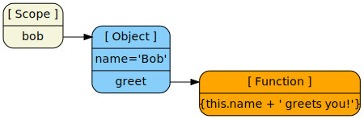
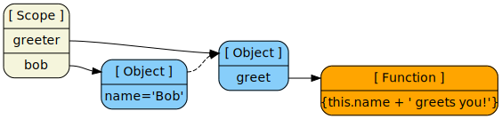
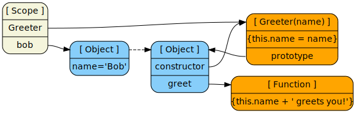
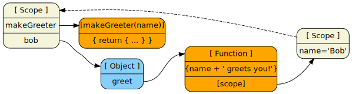
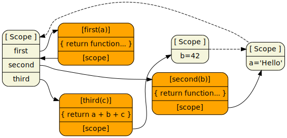

Tim Caswell
June 1, 2012
Node.js is a platform built on Chrome's JavaScript runtime for easily building fast, scalable network applications. Node.js uses an event-driven, non-blocking I/O model that makes it lightweight and efficient, perfect for data-intensive real-time applications that run across distributed devices.
| Access | CPU Cycles | Analogy | Time |
|---|---|---|---|
| L1 | 3 | Grab a piece of paper from your desk | 3 seconds |
| L2 | 14 | Pick up a book from a nearby shelf | 14 seconds |
| RAM | 250 | Take a walk down the hall to buy a Twix bar | 4 minutes |
| DISK | 41,000,000 | Leave the building and roam the earth | 15 months |
| NETWORK | 240,000,000 | Invest in Facebook, wait for them to IPO | 8 years |
What if node was modeled after CGI and used blocking I/O?
In any node program there is the concept of state. It's useful for remembering where you were when an event comes in.
JavaScript has objects that are used for storing internal state in
named properties accessible via this.

If you have several objects that share behavior, but differ in state, use prototypes.

In addition to prototypes, you can use constructors that initialize your object's state.

Contexts are also objects and can be used as such. One main benefit of this technique is you don't have to mess with this

Nested closures give you amazing power and flexiblity to store data at arbitrary levels of globalness.

Nesting is the easiest way to do serial async actions. All state is preserved automatically thanks to lexical scoping.
Store the results in the parent closure and check to see if both have finished.
The done flag is used so that we never call out callback multiple times
Sorry, no prepared content, live coding time!
The best way to predict the future is to invent it.
A distributed system is one in which the failure of a computer you didn’t even know existed can render your own computer unusable.